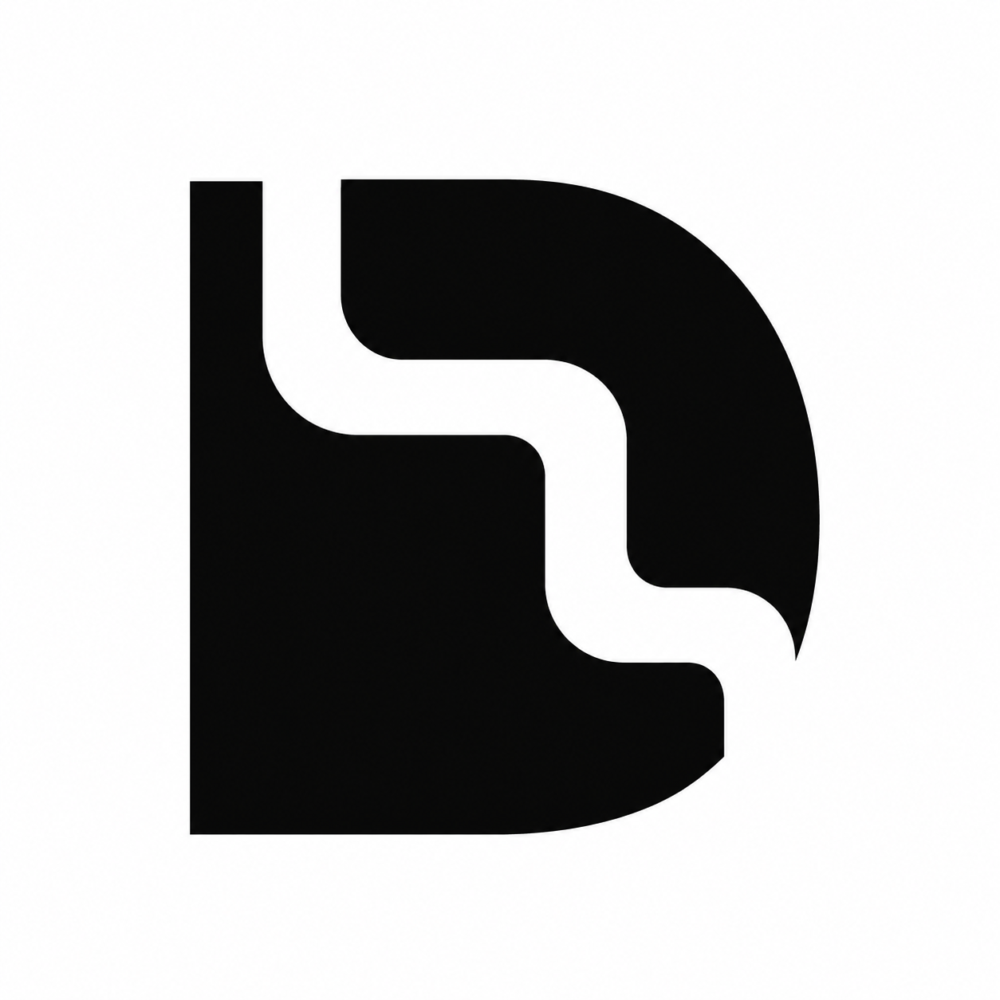
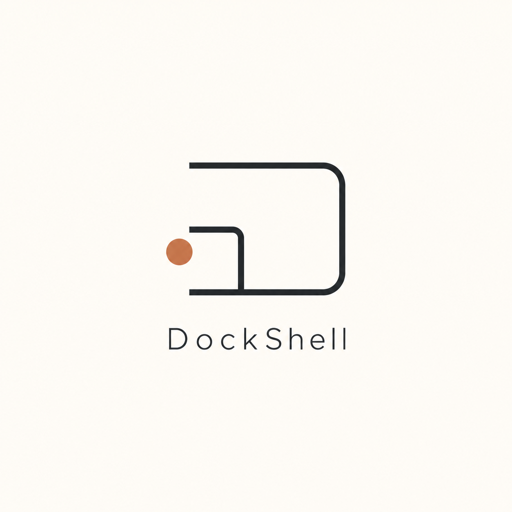
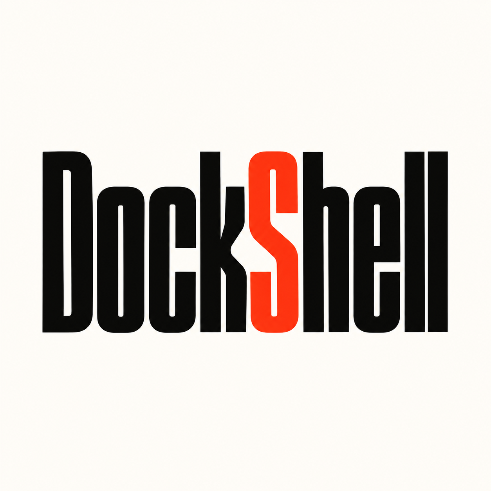
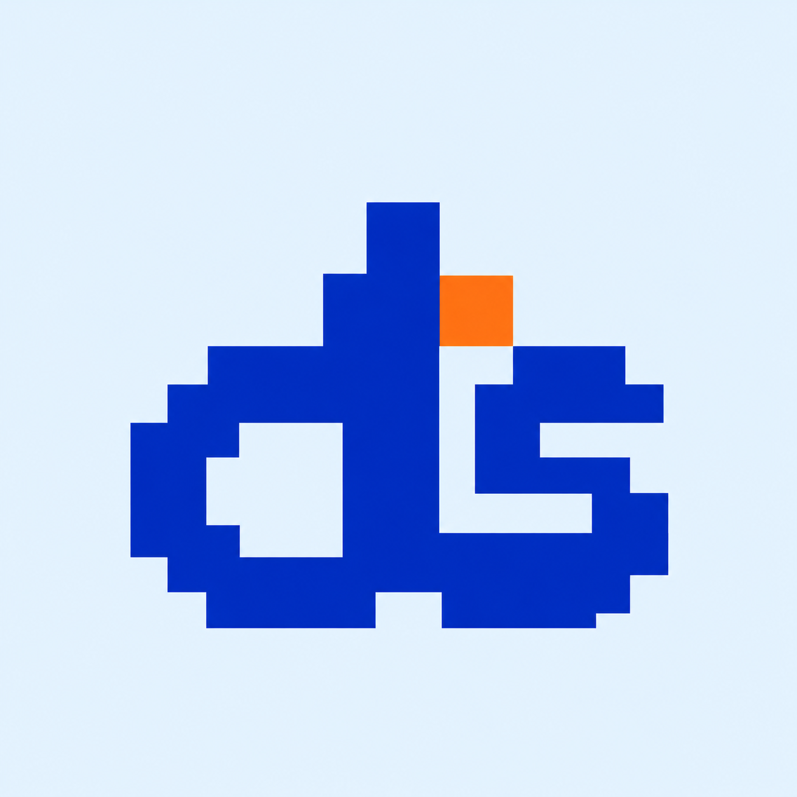
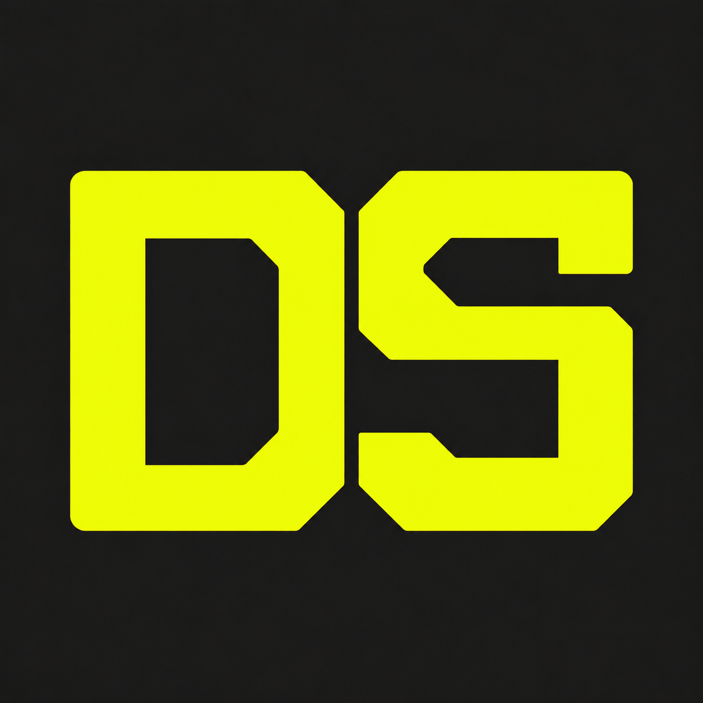
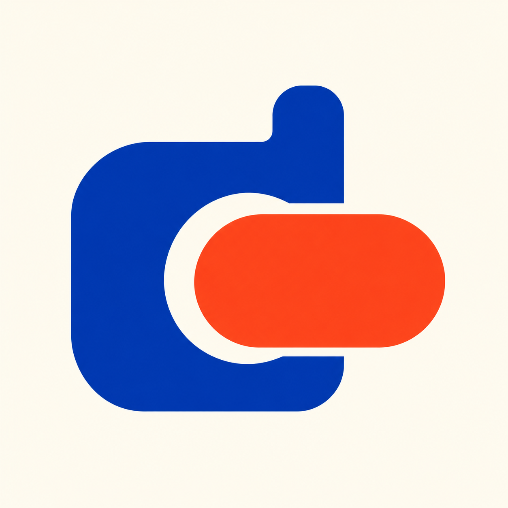
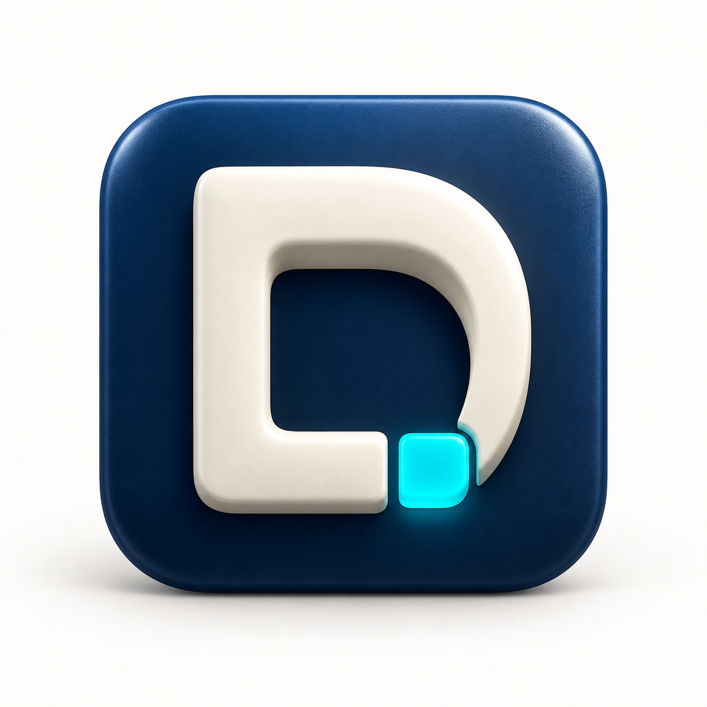

DOCKSHELL / TEN DISTINCT DIRECTIONS
风格探索 · 31–40
几何负形、精密线条、字体设计、像素、折面、工业、衬线、模块、流动曲面与材质图标。
十款分别生成，比较图形、排版和质感；点击查看原图。















DOCKSHELL / TEN DISTINCT DIRECTIONS
几何负形、精密线条、字体设计、像素、折面、工业、衬线、模块、流动曲面与材质图标。
十款分别生成，比较图形、排版和质感；点击查看原图。






